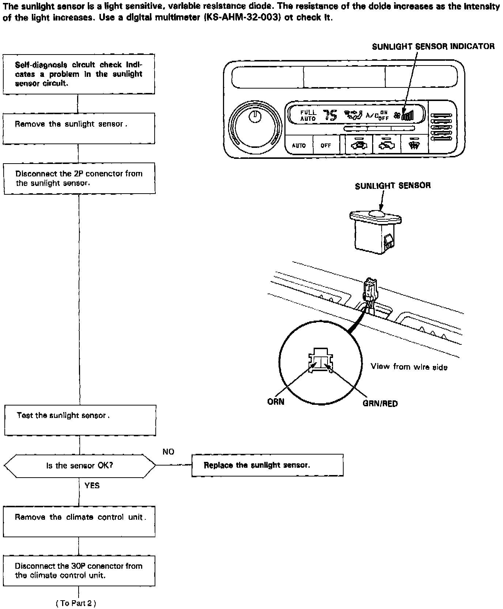
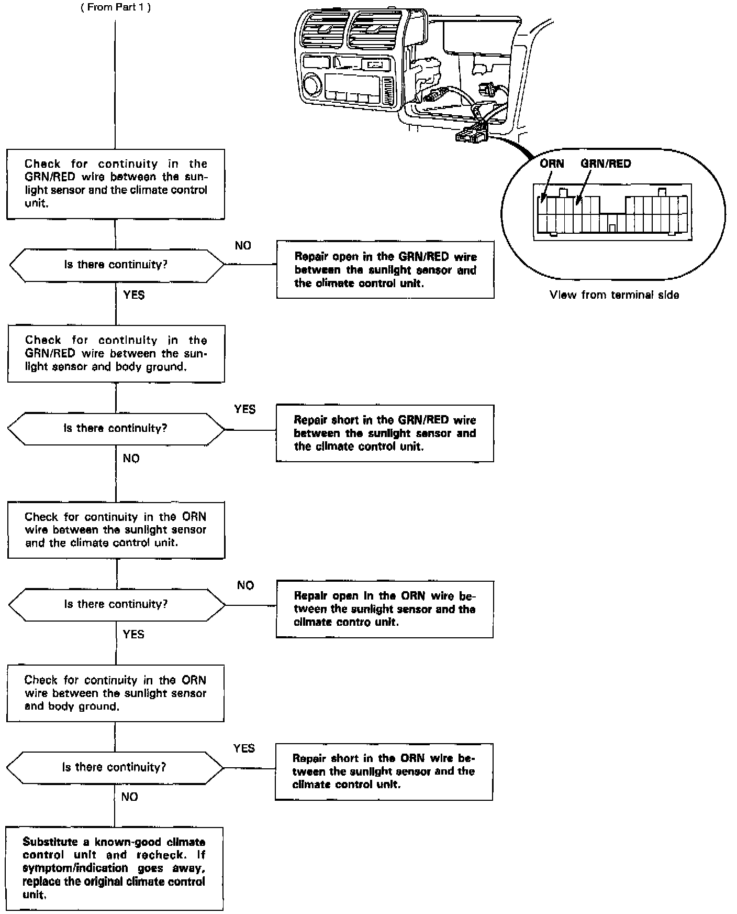

Operation CHARM
: Car repair manuals for everyone.
Home
>>
Acura
>>
1993
>>
Legend Coupe V6-3206cc 3.2L SOHC FI
>>
Repair and Diagnosis
>>
Sensors and Switches
>>
Sensors and Switches - HVAC
>>
Solar Sensor
>>
Testing and Inspection
>>
Diagnostic Flowcharts - Automatic Climate Control
Diagnostic Flowcharts - Automatic Climate Control
Sunlight Sensor, Part 1 Of 2:

Sunlight Sensor, Part 2 Of 2:
